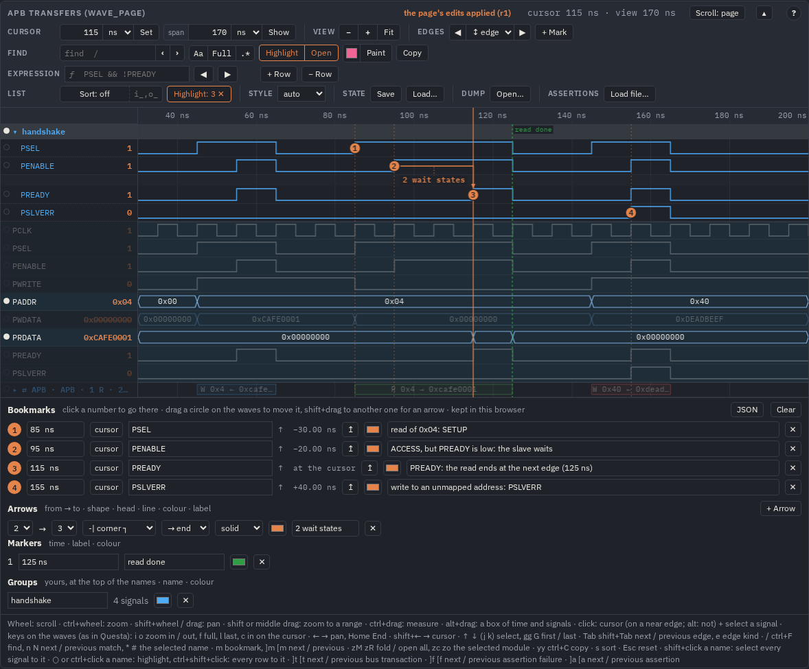

AI agents (MCP)
Give an AI agent — Claude Code, Codex, any MCP client — the tools of wavelens: it asks questions of a dump and gets short JSON answers instead of reading the dump or writing a parser for it, checks SystemVerilog assertions in one call, and writes a viewer page when it wants to show you something.
What it is
tools/wavemcp.py is an MCP server (Model Context Protocol, JSON-RPC over stdio). Python standard library only, like the
other tools. It reads a VCD, or an FST through GTKWave's fst2vcd or the sva CLI. Two tools need the sva engine's CLI —
sva_check and wave_find with an expression — and find it the way svabuild.py does:
$WAVELENS_SVA, the build (make sva-build), the committed bin/<os>-x86_64/sva, the
PATH.
A dump is read once per server (its declarations and the change counts) and kept; the transitions of a signal are read when a tool first needs them, and read again when the file changes — so a long session over a big dump stays fast, and a new simulation is seen.
Setting it up
claude mcp add wavelens -- python3 -I /path/to/wavelens/tools/wavemcp.py # Claude Code (add --scope user: every project)
codex mcp add wavelens -- python3 -I /path/to/wavelens/tools/wavemcp.py # Codex CLIAny other MCP client: run python3 -I tools/wavemcp.py as a stdio server. The server tells the agent its conventions in
its instructions (start with wave_info, then wave_signals to find names …), so the agent needs no
prompt of yours to use it. The tools that only read are marked read-only (readOnlyHint); wave_page,
view_edit and view_live write only the page you name, wave_to_fst the FST beside the VCD
(destructiveHint: false).
From the shell
The same tools work without an agent — for a script, a test, or an agent that prefers its shell:
python3 -I tools/wavemcp.py --list # the tools and their input schemas
python3 -I tools/wavemcp.py --call wave_info '{"dump": "out/examples/apb/apb.vcd"}' # one tool, its answer on stdoutThe examples below are answers of --call (shortened where they say …; sizes change with the version) on the APB example's dump (make example EX=apb →
out/examples/apb/apb.vcd: an APB3 write, a read with two wait states and a write to an unmapped address).
The tools
| Tool | Answers |
|---|---|
wave_info | the time span, the number of signals and changes, the scopes (three levels), the clocks with their period, the resets |
wave_signals | the signals by a substring or a * / ? pattern, under a scope, to a
depth: path, width, number of changes |
wave_values | the values of signals at one or more times (after the changes at that time, or
side: "before") |
wave_changes | the value at the start of a window and the changes in it, limit per signal |
wave_sample | a table per clock cycle, the values sampled just before the edge (as SVA samples), by default only the cycles where a value changes |
wave_find | an SV expression or sequence matched on every clock cycle; or a signal's edges or value at their exact times: the count and the first matches |
wave_stats | over a window: a bit's rises, falls, high time, pulse widths and period; a bus's changes, distinct values, the longest-held ones, minimum and maximum |
sva_check | assertion files and / or text evaluated over the dump in a scope: the failed ones with their first failures, passed, vacuous, not evaluated, the covers |
wave_page | a viewer page (.html) or WaveJSON (.json) of signals over a window, with
assertions bound, to show a person |
wave_to_fst | the VCD as an FST beside it (sva fst), the FSM states of its types file in it:
what was written, the notes with their lines |
view_edit | marks a page up for a person: bookmarks with an explanation, arrows between them, markers, a group of the signals that matter, highlight, colours, the cursor and the window — live in their browser, else in the page's file |
view_get | what a page shows, the person's own edits too; its signals; a picture of the screen (live) |
view_live | connects a page to the agent: what it does there appears as it happens |
wave_info — the dump at a glance
--call wave_info '{"dump": "out/examples/apb/apb.vcd"}'
{"file":"apb.vcd","unit":"ns","resolution_ns":0.001,"start":0,"end":205,"signals":61,"changes":346,
"scopes":[["apb_tb",61],["apb_tb.u_count",6],["apb_tb.u_master",18],["apb_tb.u_regs",17],["apb_tb.u_regs.regs",4]],
"clocks":[{"name":"apb_tb.PCLK","period":10,"mhz":100.0,"first_rise":5,"rises":21}],
"resets":["apb_tb.PRESETn","apb_tb.u_count.PRESETn","apb_tb.u_master.PRESETn","apb_tb.u_regs.PRESETn"]}wave_signals — find the names
--call wave_signals '{"dump": "…/apb.vcd", "pattern": "PADDR"}'
{"total":3,"scope":null,"columns":["path","width","changes"],
"signals":[["apb_tb.PADDR",8,2],["apb_tb.u_master.PADDR",8,2],["apb_tb.u_regs.PADDR",8,2]]}Also scope, depth (levels under it), active (only signals that change), limit /
offset for long lists.
wave_values — values at times
--call wave_values '{"dump": "…/apb.vcd", "signals": ["PSEL", "PADDR", "PWDATA"], "at": ["55ns", 105]}'
{"unit":"ns","side":"after","columns":["t","PSEL","PADDR","PWDATA"],
"rows":[[55,"1","0x04","0xCAFE0001"],[105,"1","0x04","0x00000000"]],
"notes":["PADDR = apb_tb.PADDR (+2 deeper)","PSEL = apb_tb.PSEL (+2 deeper)","PWDATA = apb_tb.PWDATA (+2 deeper)"]}The notes say which signal a short name was taken for: PADDR is in three scopes, the one nearest the top
wins and the answer says so.
wave_changes — what happened in a window
--call wave_changes '{"dump": "…/apb.vcd", "signals": ["PREADY", "PADDR"], "from": "40ns", "to": "170ns"}'
{"unit":"ns","from":40,"to":170,"signals":{
"PREADY":{"initial":"0","count":6,"changes":[[55,"1"],[65,"0"],[115,"1"],[125,"0"],[155,"1"],[165,"0"]]},
"PADDR":{"initial":"0x00","count":2,"changes":[[45,"0x04"],[145,"0x40"]]}}, "notes":[…]}Long answers are cut at limit; more and next_from say how to go on.
wave_sample — a table per clock cycle
--call wave_sample '{"dump": "…/apb.vcd", "signals": ["PSEL", "PENABLE", "PREADY", "PADDR"], "clock": "PCLK"}'
{"unit":"ns","clock":"apb_tb.PCLK","edge":"posedge","sampled":"just before the edge","cycles":21,"first_cycle":0,
"columns":["cycle","t","PSEL","PENABLE","PREADY","PADDR"],
"rows":[[0,5,"0","0","0","0x00"],[5,55,"1","0","0","0x04"],[6,65,"1","1","1","0x04"],[7,75,"0","0","0","0x04"],
[9,95,"1","0","0","0x04"],[10,105,"1","1","0","0x04"],[12,125,"1","1","1","0x04"],[13,135,"0","0","0","0x04"],
[15,155,"1","0","0","0x40"],[16,165,"1","1","1","0x40"],[17,175,"0","0","0","0x40"]],"only_changes":true, …}Only the cycles where a value changed (only_changes, default true): cycle 11, the second wait state, equals cycle 10 and
is left out. The values are the ones just before the edge, what an assertion sees.
wave_find — search
By an expression or a sequence, evaluated on every cycle of the clock by the sva engine:
--call wave_find '{"dump": "…/apb.vcd", "expr": "PSEL && PENABLE && !PREADY"}'
{"unit":"ns","expr":"PSEL && PENABLE && !PREADY","clock":"apb_tb.PCLK","scope":"apb_tb","sampled":"just before the edge",
"cycles":21,"matches":2,"columns":["cycle","t","end_cycle","end_t"],"rows":[[10,105],[11,115]]}
--call wave_find '{"dump": "…/apb.vcd", "expr": "PSEL && !PENABLE ##1 PENABLE ##[0:3] PREADY"}'
{… "matches":3,"columns":["cycle","t","end_cycle","end_t"],"rows":[[5,55,6,65],[9,95,12,125],[15,155,16,165]]}Or by one signal's edges (rise, fall, change) or value (a number, 'h40, an enum
label) at their exact times:
--call wave_find '{"dump": "…/apb.vcd", "signal": "PSLVERR", "edge": "rise"}'
{"unit":"ns","signal":"PSLVERR","edge":"rise","matches":1,"times":[155], …}
--call wave_find '{"dump": "…/apb.vcd", "signal": "PADDR", "value": "'h40"}'
{"unit":"ns","signal":"PADDR","value":"'h40","matches":1,"columns":["t","lasts"],"rows":[[145,null]], …}wave_stats — aggregates
--call wave_stats '{"dump": "…/apb.vcd", "signals": ["PREADY", "PADDR"]}'
{"unit":"ns","from":0,"to":205,"signals":{
"PREADY":{"changes":6,"rises":3,"falls":3,"high_pct":14.63,"high":{"min":10,"max":10,"count":3},
"low":{"min":30,"max":50,"count":2},"period":{"median":50,"min":40,"max":60}},
"PADDR":{"changes":2,"distinct":3,"values":[["0x04",1,48.78],["0x40",1,29.27],["0x00",1,21.95]],
"values_columns":["value","times","pct_of_time"],"min":"0x00","max":"0x40"}}, …}sva_check — assertions in one call
--call sva_check '{"dump": "…/apb.vcd", "files": ["examples/apb/apb_tb.sv", "examples/apb/apb.sva"], "scope": "apb_tb"}'
{"unit":"ns","scope":"apb_tb","clock":"apb_tb.PCLK","cycles":21,
"failed":[{"name":"apb_demo_no_wait","line":110,"text":"PSEL && PENABLE |-> PREADY",
"stats":{"attempts":19,"pass":3,"fail":2,"vacuous":14},
"failures":[[10,105,10,105,"expected PREADY at cycle 10"],[11,115,11,115,"expected PREADY at cycle 11"]],
"columns":["cycle","t","start_cycle","start_t","note"]}],
"passed":["apb_setup_then_access","apb_enable_needs_sel","apb_wait_holds","apb_addr_stable","apb_wdata_stable",
"apb_end_of_transfer","apb_read_waits","apb_slverr_unmapped","apb_phase_order","apb_phase_sel"],
"covered":[["apb_cov_write",2,55],["apb_cov_read_wait",1,95],["apb_cov_error",1,165]]}Files go packages first. An agent can also write a check on the spot as source text:
--call sva_check '{"dump": "…/apb.vcd", "scope": "apb_tb",
"source": "a_ack: assert property (@(posedge PCLK) PSEL && PENABLE |-> ##[0:2] PREADY);"}'
{"unit":"ns","scope":"apb_tb","clock":"apb_tb.PCLK","cycles":21,"passed":["a_ack"]}Assertions whose names do not resolve in the scope are listed as not evaluated, with the names missing. More arguments:
assertions (some only), from / to, max_failures, details,
defines. The language and the results are those of the assertions guide.
wave_page — a page to show a person
--call wave_page '{"dump": "…/apb.vcd", "out": "apb_page.html", "title": "APB transfers (wave_page)",
"signals": ["PCLK", "PSEL", "PENABLE", "PWRITE", "PADDR", "PWDATA", "PRDATA", "PREADY", "PSLVERR"],
"from": "30ns", "to": "200ns"}'
{"page":"…/apb_page.html","bytes":910944,"notes":["PADDR = apb_tb.PADDR (+2 deeper)", …]}
out ending in .json writes the WaveJSON instead. clock (a name or "auto") gives
one cell per cycle; auto_gap: "16:2" folds idle cycles out of a long window (see Gaps);
sva files and bind: ["name@scope"] put the assertions on the page.
view_edit — marking a page up for a person
A page is for a person to look at; the agent can point at what matters on it, the way you would with the viewer's buttons: a
numbered circle on a signal with an explanation, an arrow between two of them with a label, a marker across every row, a group of the
signals that matter at the top, a highlight, a colour. view_edit takes the viewer's
commands — the same ones a script runs in the page with view.run — in
order; times are ns, signals as everywhere here:
--call view_edit '{"page": "apb_page.html", "ops": [
{"op": "bookmark", "t": 85, "signal": "PSEL", "text": "read of 0x04: SETUP"},
{"op": "bookmark", "t": 95, "signal": "PENABLE", "text": "ACCESS, but PREADY is low: the slave waits"},
{"op": "bookmark", "t": 115, "signal": "PREADY", "text": "PREADY: the read ends at the next edge (125 ns)"},
{"op": "arrow", "from": 2, "to": 3, "label": "2 wait states", "shape": "-|"},
{"op": "bookmark", "t": 155, "signal": "PSLVERR", "text": "write to an unmapped address: PSLVERR"},
{"op": "marker", "t": 125, "label": "read done", "color": "#2f9e44"},
{"op": "group", "name": "handshake", "signals": ["PSEL", "PENABLE", "PREADY", "PSLVERR"], "color": "#4dabf7"},
{"op": "highlight", "add": ["handshake", "PADDR", "PRDATA"]}, {"op": "cursor", "t": 115}]}'
{"page":"…/apb_page.html","view":"view","results":[{"op":"bookmark","n":1},{"op":"bookmark","n":2},…,{"op":"cursor","t":115}],
"note":"written into the page: the person sees it when they open or reload it"}
A command that cannot run says why in its result (no signal "PSELL"; similar: apb_tb.PSEL) and the others still run.
Without a live page the edits go into the page's file, and the person sees them when they open or reload it; what they changed in
their browser meanwhile in the same parts gives way, the rest stays.
view_live — as it happens
view_live {"page": "apb_page.html", "open": true} # the link written into the page, the page opened
view_edit {"page": "apb_page.html", "ops": […]} # appears on the person's screen at once
view_get {"page": "apb_page.html", "picture": true} # what is there now, their own bookmarks too, and a picture of itThe page connects to the server on 127.0.0.1 with a key that only the pages written by view_live carry;
● live in its bar says so (a click disconnects). The person and the agent work on the same waves: the agent puts a bookmark,
the person moves it or answers in its text, view_get reads it back. save in view_edit writes the
live page's state into its file too; off in view_live takes the link out of the page before it goes to anyone
else.
Conventions
- Times are ns: a number, or a text with a unit (
"2.5us","55ns"). Answers give"unit":"ns". - A signal is its full path, its path under
scope, or the unique tail of a path (PSEL,u_regs.PSEL). Of several matches the one nearest the top is taken and named innotes; two at the same depth are an error naming both. Of several signals asked for, one not found is left out and named inmissing. - Bits:
x[7:4]andx[3]select bits. - Cycles are the clock's rising edges from the start of the dump, numbered from 0 — the same numbers in
wave_sample,wave_findandsva_check. Sampled values are the ones just before the edge. - Long answers stop at
limit;more,next_from/next_offsetsay how to continue.
What a session looks like
You ask in plain words; the agent picks the tools. For example, “In out/examples/apb/apb.vcd, which APB transfers had wait states, and does any assertion of examples/apb fail?” becomes:
wave_info— one clock,apb_tb.PCLKat 100 MHz, 21 cycles; the scopes.wave_findwithPSEL && PENABLE && !PREADY— wait states at cycles 10 and 11 (105, 115 ns).wave_sampleofPSEL PENABLE PWRITE PADDR PREADYaround them — the read of0x04that started at cycle 9.sva_checkwith the two files inapb_tb— onlyapb_demo_no_waitfails, at exactly those two cycles: it forbids wait states, and the slave has them.wave_pageof the window — a page you open to see it.
Five calls, a few hundred bytes each, instead of reading 346 value changes — or, on a real dump, millions.
What it saves
make mcp-bench AGENT=claude MODEL=sonnet REPS=2 (or AGENT=codex) runs eight tasks with known answers — two on
the APB example, one on the FSM example's FST, five on a generated 3.5 MB dump of 40 000 cycles — by an agent with the server and
without it (the shell and the WaveLens command-line tools, named in the same prompt), and counts the tokens. Measured on 21 October
2026, two runs of each task in each mode, every one of the 128 answers right (every token the model read or wrote, the context read
again from the cache included; the medians per task summed):
| Agent | without the tools | with the MCP server | the same tools from the shell (--call) |
|---|---|---|---|
| Claude Code, Sonnet 5.5 | 343 k tokens, $0.53, 147 s | 261 k (−24 %), $0.38 (−28 %), 96 s | 339 k (−1 %), $0.49 (−8 %), 170 s |
| Codex CLI, its default model | 558 k tokens, 232 s | 741 k (+33 %), 179 s | 540 k (−3 %), 159 s |
- Where it saves: assertions (
sva_check: one call instead of reading the CLI's help and its JSON — Claude −71 % on that task) and an FST with enum names (−49 %, Codex −37 % through the shell); a question answered by a few searches on a dump too big to read. - Where it does not: one number from a dump whose signals the task names, which the agent gets by writing one Python parser — the tools' schemas, read again with every request, cost more than the parser.
- Codex defers MCP tools (it looks them up while it works), about 5 k tokens more per request: for Codex the same tools
through
--callin its shell are the cheaper way. - Answers came faster with the tools.
The per-task numbers are in DEVELOPMENT.md § Measured.
The benchmark without an agent
make mcp-bench # the tasks solved through the tools by a script: answers, bytes
make mcp-bench AGENT=claude MODEL=sonnet REPS=2 # agents with and without the server: costs tokens
make mcp-bench AGENT=codex TASKS=a1,b3 # some tasks onlymake mcp-bench alone is part of make check: it solves every task through the tools by a script (16 calls,
3.3 KB returned, every answer right). With AGENT= it runs the agents; the runs and transcripts go to
BUILD/mcp_bench/.